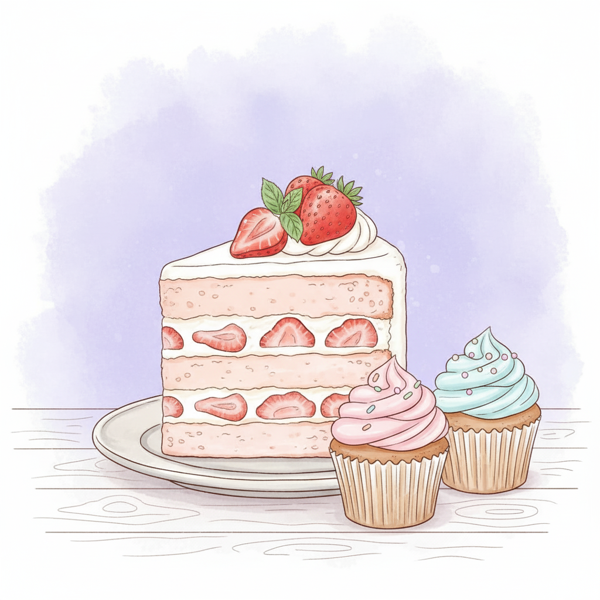

Tarta de manzana
Un postre tradicional, sencillo y delicioso para toda la familia.

Ingredientes
- 2 manzanas grandes
- 150 g de harina
- 100 g de azúcar
- 2 huevos
- 50 g de mantequilla
- 1 sobre de levadura
- Canela en polvo al gusto
Preparación
- Precalentar el horno a 180ºC.
- Batir los huevos con el azúcar hasta obtener una mezcla espumosa.
- Añadir la mantequilla derretida, la harina y la levadura.
- Verter la masa en un molde y cubrir con rodajas finas de manzana.
- Hornear durante 30-35 minutos hasta que esté dorada.
Consejo
Espolvorea canela o azúcar glas por encima antes de servir para un acabado perfecto.